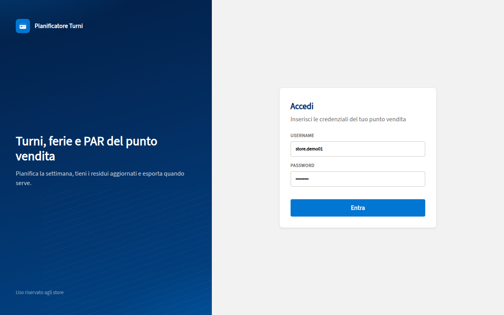
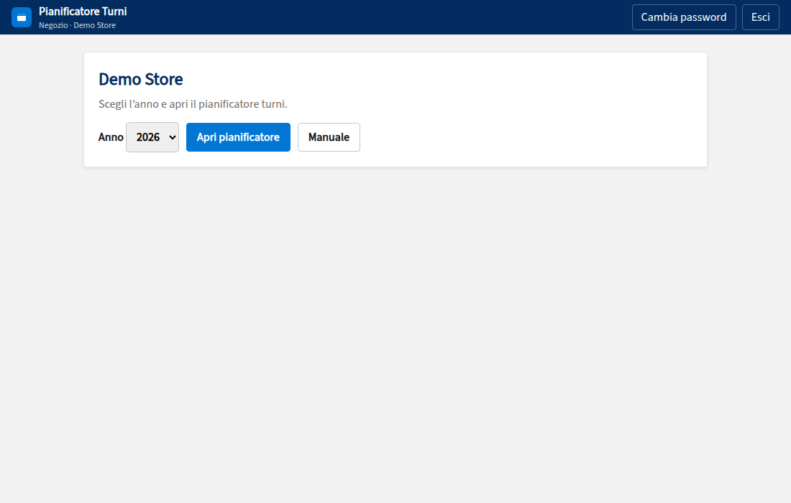
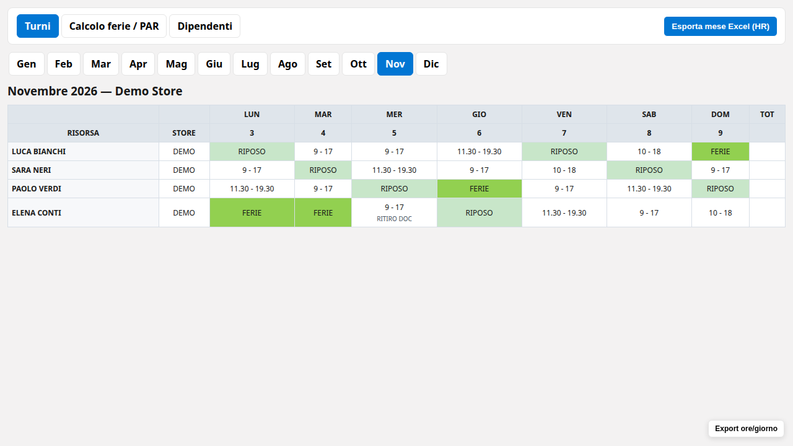
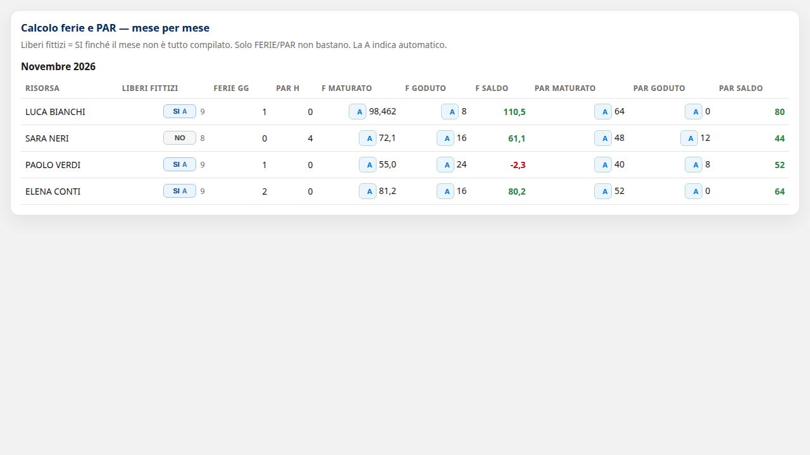

Manuale d’uso — punto vendita
Guida rapida per l’account del negozio: accesso, turni, ferie/PAR ed export. Le immagini usano dati di esempio (Demo Store).
Questo manuale riguarda solo lo store. La parte admin (creazione negozi) non è inclusa. Puoi anche scaricare il PDF.
1. Accesso
Apri il link del Pianificatore e accedi con username e password del tuo punto vendita (es. store.demo01).
- Al primo accesso ti verrà chiesto di impostare una nuova password.
- Se le credenziali non sono corrette, compare un messaggio sotto il pulsante Entra.

2. Home negozio
Dopo il login vedi il nome del negozio. Scegli l’anno e apri il pianificatore.
- Seleziona l’Anno (es. 2026).
- Clicca Apri pianificatore.
- Da qui puoi anche aprire questo manuale, cambiare password o uscire.

3. Pianificare i turni
Nel pianificatore hai tre schede: Turni, Calcolo ferie / PAR, Dipendenti.
- Scegli il mese con i pulsanti Gen–Dic.
- La griglia mostra le settimane come nel foglio Turni HR: risorsa, store, giorni, totale straordinari.
- I giorni fuori data inizio/fine della persona risultano disabilitati.
- Una nota sotto l’orario serve per testi liberi (es. ritiro documenti), senza cambiare il tipo di turno.

5. Calcolo ferie e PAR
La scheda Calcolo ferie / PAR mostra, mese per mese, maturato, goduto e saldi. I valori con A sono automatici; con M sono manuali (clic per passare da uno all’altro).
Liberi fittizi
- SI (automatico) finché il mese non è interamente compilato per quella risorsa: si usa la stima Excel
ROUNDUP(giorni / 3,5). - Se hai messo solo alcuni giorni di FERIE o PAR, il mese non è completo → restano liberi fittizi SI.
- NO automatico solo quando ogni giorno in forza ha un turno o un’assenza.
- Puoi forzare SI/NO cliccando il pulsante; la A indica che è ancora automatico. Accanto vedi quanti liberi entrano nel calcolo.
In fondo trovi il riepilogo annuale (totali e saldi di fine anno).

6. Export Excel
- Esporta mese Excel (HR) — foglio stile Turni HR del mese aperto.
- Export ore/giorno (pulsante in basso a destra) — ore lavorate per giorno e per risorsa, utile per controlli.
I file si scaricano sul computer; in uso locale con cartella OneDrive possono anche essere copiati in documenti/.
7. Password e uscita
- Cambia password — dall’header, dopo il login.
- Esci — chiude la sessione e torna al login.
- Con il pianificatore aperto puoi cambiare anno dalla barra in alto o chiudere il pianificatore per tornare alla home negozio.